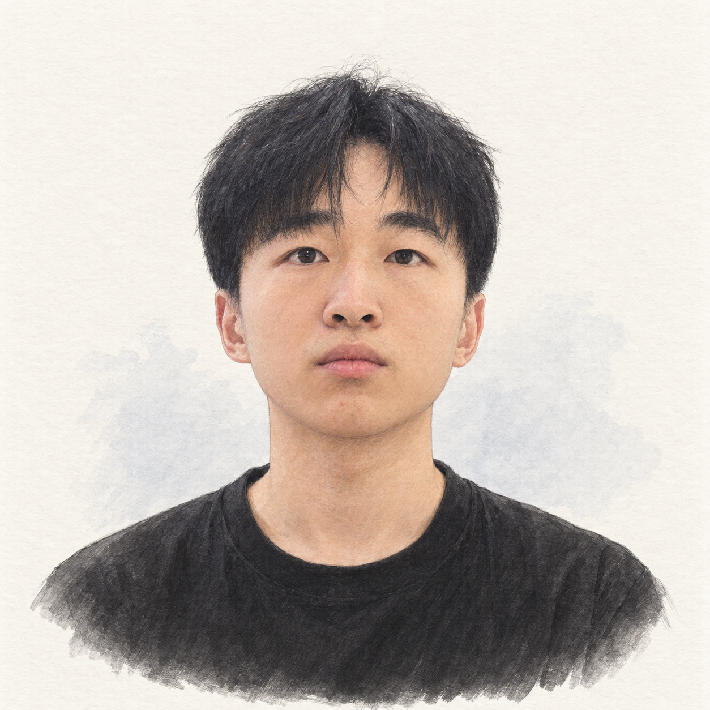

|
Suzhe Xu
I am a final-year undergraduate in Artificial Intelligence at Huaqiao University, expecting to graduate in June 2027.
Since June 2025, I have been a visiting student and research assistant at Peking University, advised by He Sun and Wenzheng Chen.
I previously held research internships at Xiaohongshu (RED), Dots Studio and Kuaishou.
My research focuses on efficient generative modeling, including few-step generation, diffusion distillation, video inverse problems, and causal world models. I study how training objectives and inference design affect generation quality, temporal consistency, and computational efficiency.
I am applying for graduate programs starting Fall 2027.
Email /
CV (PDF) /
Scholar /
GitHub
|

|
Selected Publications and Manuscripts
My work spans real-time video restoration, few-step language generation, and causal world models. Below are selected publications and manuscripts, followed by ongoing research.
|
|
|
InstantViR: Real-Time Video Inverse Problem Solver with Distilled Diffusion Prior
Weimin Bai*,
Suzhe Xu*,
Yiwei Ren,
Jinhua Hao,
Ming Sun,
Wenzheng Chen,
He Sun
CVPR, 2026 Highlight (top 3%)
* Equal contribution.
arXiv /
Paper /
Project /
Presentation
We distill a video diffusion prior into a causal autoregressive student for one-step video restoration, without external paired clean/degraded training data or iterative test-time optimization. LeanVAE integration enables real-time streaming inpainting, deblurring, and super-resolution, with up to 100× speedup over iterative solvers. I co-led method development, implementation, and experiments, and presented the work at CVPR.
(Hover the clip to see measurement → reconstruction.)
|
|
|
InstantViR++: Improved Posterior Distillation for Real-Time Video Inverse Problem Solving
Suzhe Xu*,
Weimin Bai*,
Jinhua Hao,
Ming Sun,
Wenzheng Chen,
He Sun
Submitted to IEEE Transactions on Multimedia, 2026
* Equal contribution.
I study cross-VAE posterior distillation and the balance between measurement consistency and generative supervision. Bidirectional latent conversion queries the frozen teacher and returns predictions to student coordinates; a stop-gradient surrogate supplies the student-space update. Controlled comparisons investigate perceptual and temporal behavior, alongside cyclic measurement-consistency weighting.
|
|
|
KAT-Coder-V2 Technical Report
Fengxiang Li, ...,
Suzhe Xu, ...,
Ming Sun,
Lin Ye,
Bin Chen
Technical Report, Kuaishou Technology, 2026
arXiv
I contributed to WebCoding data curation and continued pretraining. I developed functional verification with LLM-generated tests and browser agents, curating 10k+ web-tool/game SFT examples. I also built an Issue–PR to FIM/unified-diff pipeline spanning 3,600+ repositories and 187,858 examples, and trained/evaluated Qwen3.5-35B-A3B at 64K context using Megatron-Bridge on 32 H800 GPUs.
|
Research in Progress
Prometheus: Causal Few-Step Streaming World Models for Autonomous Driving
Peking University · Industry-collaborative research · Jun. 2026–present
Working title. Manuscript in preparation; targeting submission to CVPR 2027.
I develop few-step causal world models for driving videos. I implemented a three-view pipeline combining chunk-causal fine-tuning, four-step causal consistency distillation, and Self-Forcing distribution matching distillation, with synchronized multi-view rollouts and clean-history KV caching. The implementation covers single-, three-, and five-view configurations; current five-view work extends causal distillation to 101-frame sequences.
Multi-Agent World Model Post-Training and Evaluation
Peking University · Ongoing
Research in progress; targeting submission to CVPR 2027.
I study multi-agent world models with independent per-agent action conditioning and native dual-view generation. I adapted Cosmos3-Edge and trained with a 93-to-189-frame curriculum. Through comparisons under matched frame rates, prediction horizons, and sampling budgets, I examine temporal consistency and discrepancies between training loss and visual fidelity. Planned work investigates cross-backbone distillation toward causal few-step generation.
Research Internships
Xiaohongshu (RED), Dots Studio Aug.–Oct. 2026
Multimodal Research Intern
Native few-step language generation. I established FLM baselines and adapted MeanFlow and simplified consistency training for 1/2/4-step generation, studying the gap between training objectives and generation quality, and the trade-offs among quality, diversity, and computation.
Distribution-matching distillation. I investigated how score-difference processing and auxiliary score estimation affect one-step diffusion distillation, using controlled CIFAR-10 experiments to assess sample quality, diversity, and training stability.
Kuaishou Jan.–Jun. 2026
Algorithm Research Intern, Frontier Agent Algorithms
I built functionally verified WebCoding data pipelines and conducted supervised fine-tuning and long-context continued pretraining, contributing to the KAT-Coder-V2 Technical Report. I also conducted InstantViR++ research with Kling AI and Peking University during this internship, supported by Kuaishou.
Honors and Other Activities
- National Scholarship, Ministry of Education of China, 2024.
- National-Level Project, Undergraduate Innovation and Entrepreneurship Training Program (China).
- First Prize (Provincial Level), China Undergraduate Mathematical Contest in Modeling (CUMCM); team lead.
- Outstanding Camper, Datawhale · Alibaba Cloud Tianchi AI Summer Camp.
I speak Mandarin, English (IELTS 7.5), and intermediate French (approximately CEFR B1, self-assessed). Earlier in my undergrad I worked with Prof. Jialin Peng at Huaqiao University on multimodal medical image segmentation and SAM adaptation.
|
Last updated: October 16, 2026. Template courtesy of Jon Barron.
|
|